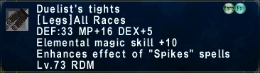

Level 75 reference · Zenith rules
| CAUTION! | ||
| This article is only a guide. Information expressed in a guide is usually more opinion than fact and should be taken as such. Guides are written by players, based upon their experiences, successes and mistakes, and are meant to aid other players. However, there may be differing opinions than those expressed in a guide. Strategies and information in guides may not work for everyone. | ||
NOTE: CONTAINS SOME OUT OF ERA INFO
Head
File:WivreMask.jpgFile:Wivre mask plus 1.jpg
A useful head piece to macro in for Weapon Skills such as Vorpal Blade and Savage Blade. If you have other frontline jobs this piece may be worthwhile, however it is not better than the Ogre Mask.
File:Ogremask.jpgFile:Ogremaskplus1.jpg
A great piece to macro in for weaponskills when your accruacy has reached a reasonable point (i.e. Campaign}. Being only available for Red Mages and Beastmasters, the NQ version is often very cheap across servers.

The ever loving "O-Hat" presents the largest increase to Accuracy in this slot equippable by Red Mages. Great for fighting monsters of tougher levels and for macroing in for multi-hit weaponskills such as Evisceration. Dropped from Hakutaku, the downsides to obtaining this item are 1)- The time it takes to find enough people for a fight; 2)- The time it takes to get everyone, who wants it, their own hat and 3) The cost of the pop item - Hakutaku Eye Cluster.
More HP for Spirits Within. This piece provides a little accuracy and unlike the O-Hat and Walahra Turban it actually increases your defense. However, being made from Behemoth Leather this may not come cheap.
For players who prefer to play casually, rather than dedicate large amounts of time to end game events (i.e. Sky; Dynamis; Salvage etc..) the rewards for doing Assault Missions are great alternatives. The Pahluwan Armor Set is particularly good for several jobs to use as a TP Build, including Red Mages. This head piece is your alternative to getting an OHat; Whilst it has lower accuracy, it makes up for it with Defense, HP, Attack and style.
Obtained by defeating Scitalis in Grauberg. This expensive piece has only only one use - Spirit's Within. Though it can be argued as being helpful for tanking, there are other options with HP better than this.
Easy to obtain, the Walahra Turban is brilliant. The additional HP and MP is beneficial in several ways, and the +Haste is great for a TP Build. If you haven't gotten one of these yet, what are you waiting for?
A small increase to Accuracy and Strength, the first item from the Morrigan's Robe Set is good, but not amazing.
Body
For those on a budget, the Jaridah Peti is a cheap item for additional accuracy. However, as said before, Red Mages only have a B Skill rating in Sword and Dagger, and therefore should invest into replacing this with a better item as soon as possible.
An ever popular item amongst front line jobs, the Scorpion Harness is great for building TP and multi-hit weaponskills. And its Red!
Try to avoid using this against Shiva Prime and ice magic alike.
This popular Auto-Refresh item is actually not a bad choice for Campaign. It won't enhance your damage in anyway, but does have nice defence and will save you that much more MP, particularly if you like to cast Raise for extra points.
File:CoralScaleMail.pngFile:Darksteel Harness.jpg
As well as wearing Elemental Resistance items, macroing the right Damage down gear at the right time will increase your survival considerably.
Great to use when accuracy is not a problem. Benefits both DoT and Weaponskills. Obtained by defeating Ose in Labyrinth of Onzozo.
A very nice piece considering your accuracy is up to scratch. Solid increases in STR and DEX make this a great all-in-one for both Sword and Dagger weaponskills. Interestingly enough, this also makes a great item for a Convert Macro.
This incredibly good (and incredibly rare) body piece is perfect for any melee mage. With the same accuracy bonus as the Scorpion Harness, this body piece also comes with a significant boost to MP and enough -Enmity to warrant it a piece for main healing. In addition, it also comes with 20 Charges of "Enchantment: Adds "Refresh" Effect" - However, the following is unknown:
- How much MP total does each charge recover?
- What is the duration of the effect?
- What is the MP:Tick ratio?
- Does the effect remain when the piece is unequipped?
- Does it stack with Refresh, Mage's Ballad, Evoker's Roll and so on?
Regardless, even without the Enchanment, the Hydra Doublet is a great piece to have. Obtained by defeating Nightmare Taurus in Dynamis - Tavnazia.
Another piece from the Pahluwan Armor Set, this body is a step up from the Scorpion Harness and increases your Crit Hit Rate. Great for squeezing out that little extra bit more damage. Try using this with full Crit Merits, Dissector and Kidney Knife for a significant increase. (Ilrusi Atoll Assault Points)
A great piece for weaponskill macros, but also a decent TP item when subbing a defensive job such as Blue Mage. DEF:46 and VIT+3 adds that much more towards keeping Stoneskin up.
Substantial boost to HP? - Check
Substantial boost to MP? - Check
Obtained from Nyzul Isle Investigation this body piece adds damage to Spirit's Within, and kicks up your Haste build.
A decent alternative to the Goliard Saio, this item provides a nice boost to Haste.
Unlike the first item, the second piece from the Morrigan Set is absolutely jaw-dropping. A huge increase to Strength, complimented by Accuracy and Attack makes this a great option for a TP or Weaponskill setup. Along with Auto-Refresh, this is the stuff dreams are made of.
Do note that anything from the Morrigan's set will take no less than an immense dedication of time, money and effort (even by FFXI's standards) and should only be considered by the most hardcore of players.
Hands
File:WarlocksGloves.JPGFile:WarlocksGlovesPlus1.png
Your AF gloves aren't genuinely bad for melee. With a small MP bonus, DEX and huge skill increase in Parrying, these gloves are useful for Evisceration and Defense setups. However, they are outshined by more interesting items.
File:Pallas's Bracelets.jpgFile:Alkyoneus's Bracelets.JPG
Hugely popular amongst Damage Dealer jobs, these bracelet's provide a substaintial boost in STR and HP making them hard to beat for a Weapon Skill macro. Just like those melees though, avoid from using these to gain TP as the -DEX will decrease your accuracy.
File:CreekFMitts.jpgFile:River Gauntlets.pngFile:WoodGloves.jpg
For Tarutaru, Mithra and Elvaan Red Mages, your RSE2 items are solid options.
- For Taru's:- A great item for Sword Weaponskills.
- For Mithra:- A great defensive item for /BLU, /PLD and Spirit's Within.
- For Elvaan:- A solid option for its MP+ and DEX for building TP/Dagger Weaponskills.
Unfortunantly, these items can be expensive so be prepared to break the piggy bank.
Another item from the stunning Hydra Doublet Set; these gloves pose the highest amount of accuracy in the hands slot for RDMs. However, with so many alternatives that are easier to obtain, noone's going to complain at you for not having these.
An alternative to having Pallas/Alky Bracelets. Exculsive to RDM's and BST's only, this piece is usually very cheap on many servers and a huge bargain.
Another item with a solid increase to attack for melee's. Not the best item on the list, but still worthwhile. Better for Dagger Weaponskills.
+HP, +Attack, and Haste makes this item great for a Haste Build. Macro this in with other Haste items and watch the attacks fly. Also good for cutting time off long recast spells such as Raise or Utsusemi: Ichi.
Another great piece from the Pahluwan Khazagand, though not the best. A solid increase to accuracy makes this great for a TP Build, and if you have jobs such as Corsair and Thief. However, it lacks the versatility of other options.
From our JSE, the Chasuble Set, this nicely combines MND and Accuracy into one affordable item. A nice option for those who need to save space.
This item from the Goliard Saio Set nicely combines Accuracy, Attack, MAB and MAccuracy all into one slot. Whilst it doesn't boast an increase as high as items like the Pahluwan Dastanas or Zenith Mitts, its huge versatility truly makes this world class.
And if you liked what "Goliard" had to offer, then you're gonna love the "Morrigan" brand. Look at this as its HQ version if you will; the Morrigan Cuffs give +1 to everything and nice helping of MP.
Legs
File:CoralCuisses.png File:Darksteel Subligar.jpg
Two more pieces from the Coral and Darksteel Harness Set worth buying to macro in when bracing against a serious physical or magical attack.
This piece from the Hydra Doublet Set boasts an unmatchable increase to accuracy for Red Mages. In addition, it has a respectable amount of -Enmity worth using when casting spells such as Cure IV.
Can be bought for 32,000 Imperial Standing with Sergeant Major rank from a Imperial Overseer. A solid increase to Accuracy, though not much for versatility.
File:Vendors slops.jpg
File:Princes-Slops.jpg
A very good piece for a wide range of reasons. HP for Spirits Within, MP for Convert, MND for Enfeebling, and Accuracy for TP/Multi-Hit Weaponskills. Prince's Slops are good, but when it comes to a bargain it doesn't get much better than Vendor's Slops.
Though expensive, the legs from the Dusk Jerkin Set are incredible. A huge increase to attack makes this a great DoT and Weaponskill item. Very beneficial to have if you've levelled one of the many jobs that can equip this.
Once again: +HP --> Spirits Within.
The fourth item from the Pahluwan Armor Set is good, but with the versatility of Vendor's Slops and the power of Dusk Trousers, these aren't the best to have.
File:CrimsonCuisses.png
File:BloodCuisses.png
A very popular item - "A Faster Red Mage is a Happier Red Mage". Whilst these boast no significant benefits to meleeing, the Elemental Resistance bonus', (coupled with Crimson/Blood Greaves) makes these great for resisting elemental attacks. However, please be careful when using these against Demon or Dragoon-type enemies.



Great for fans of Dagger Weaponskills; If you spent the time and effort into getting these, Show em' Off. Unfortunantly, how "excatly" these increase Spike Spells is unconfirmed, but they seem to make a difference.
A good replacement for anyone with a Darksteel Subligar, but thats really it.
With Haste +2%, the Nashira Seraweels boast great versatility. Work Hard for these; It doesn't get much better.
Feet
File:BoundingBoots.png File:LeapingBoots.PNG
Though this is a list for End Game equipment, these low level items are a solid option right up to 75. Especially for Dagger Weaponskills.
Unfortunantly there aren't many items for the feet slot that increase accuracy for Red Mages, however you can easily make up for it elsewhere. If you do need an extra boost then here's your first option.
File:Creek F Clomps.pngFile:Marinefboots.JPG
More RSE2 items, but this time only for Tarutaru's and Hume's.
- For Taru's - A decent item for Weaponskills and defense setups though the -MP is unnattractive.
- For Humes - An edge over the Tarutaru option, these Boots provide a great +HP boost for Spirit's Within, and both STR and DEX for Dagger/Sword weaponskills.
Funnily enough, the Female versions of RSE items have a trend of being much cheaper than the male versions.
Sorry Gents.
An item with some potential. The effect is triggered (randomly) when you are hit and have HP < 25% and TP < 100%. Not bad, but don't be surprised if its unreliable.
A great item to have for Sword weaponskills and for those with other jobs levelled. Both the increase to STR and Attack will increase your damage, but refrain from using these to build TP.
The final item from the Hydra set, these wear the crown of "most accuracy" and aren't a bad option for casting healing spells with the -Enmity.
File:Ogre Ledelsens.gifFile:Ogeledelsensplus1.png
The last item from the Ogre Jerkin Set. The significant increase to attack will do nicely for either a TP or Weaponskill build. Brilliant for Savage Blade. Recommended to get the +1 version, particularly if you use Errant Pigaches, though the NQ version is a better bargain.
File:Dusk Ledelsens.jpgFile:Dusk Ledelsens Plus 1.jpg
Expensive. Haste +2% isn't going to be majorly noticeable, but if you'd like to reach the 25% Haste Cap (for equipment), this is the only option. Nice to have for the feeling of "completeness". Even if you can afford it, don't spend the money on the HQ version - Get something more worthwhile for your gil.
The final item from the Pahluwan Armor Set ends on a good note. Dexterity and Accuracy makes this the best item to have for Evisceration.
File:Crimson greaves.pngFile:Blood greaves.PNG
Like the Crimson/Blood Cuisses, these are great for Elemental Resistance. Unlike the Crimson/Blood Cuisses, these actually have some melee benefits. As with anything from the Crimson Scale Mail Set do watch out for the Dragon Affinity effect.
Until you can get a pair Rutter Sabatons, Ogre Ledelsens will suffice. However, if you do want some +STR, here's an answer. Though its available to several jobs, these are generally cheap because there are so many better options before level 74 for DD's.
Whilst the Pahluwan Crackows are better for Evisceration, these do have the advantage of being versatile. A solid item for Enfeebling, Stoneskin, Nuking and Resting.
Like the Goliard Clogs, there are better options than this for meleeing. However, with MND+10 these are worth having if you can get them.
[Next Page: "The Accessories"]
Adapted from Eden Wiki: Red Mage: Endgame Melee Equipment Guide by Tashan p2 · Contributors and history · CC BY-SA 4.0. Revision 21081. Layout, links and optional background text adapted for Zenith.